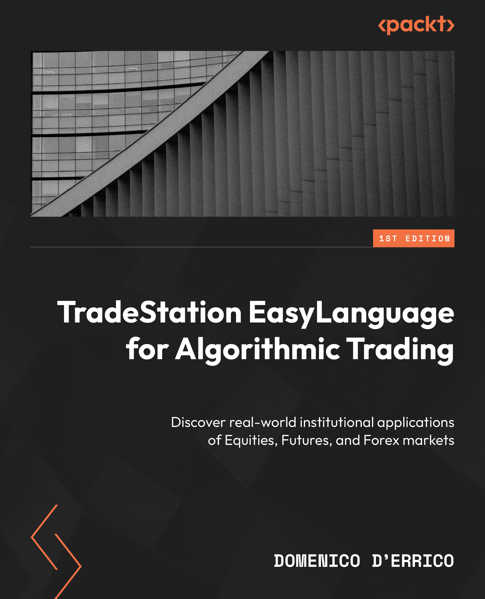
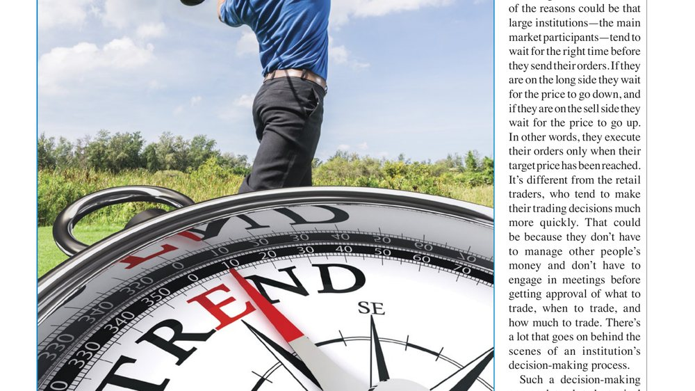
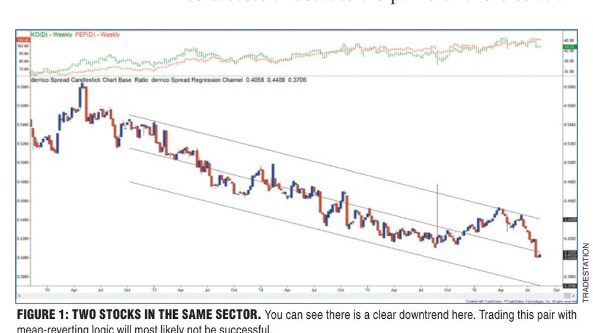
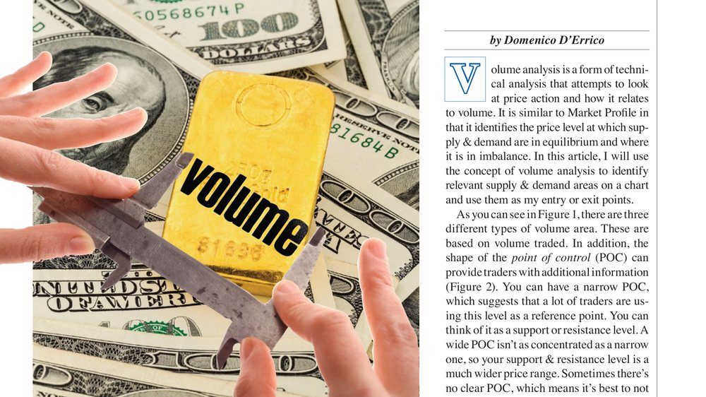
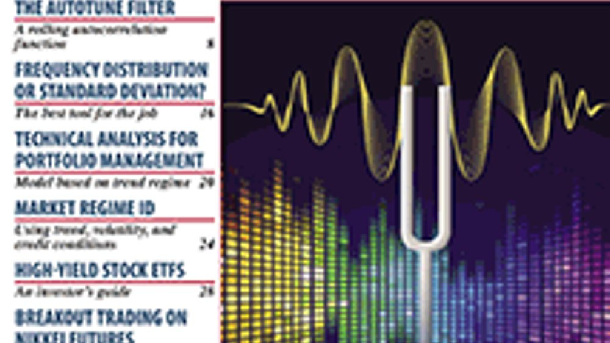
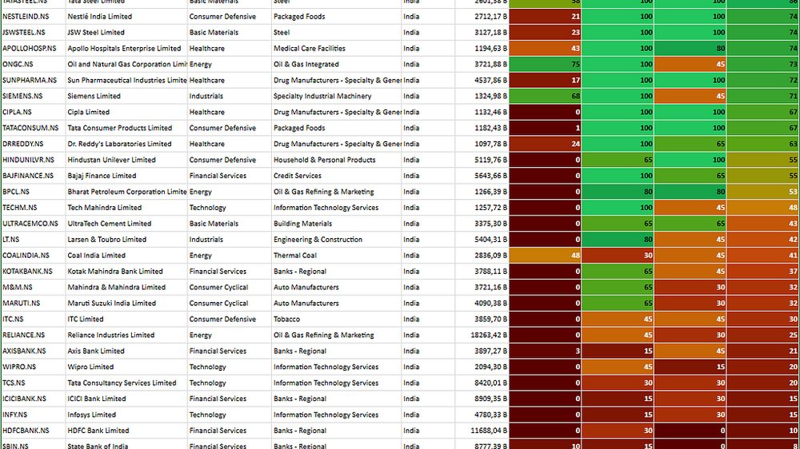
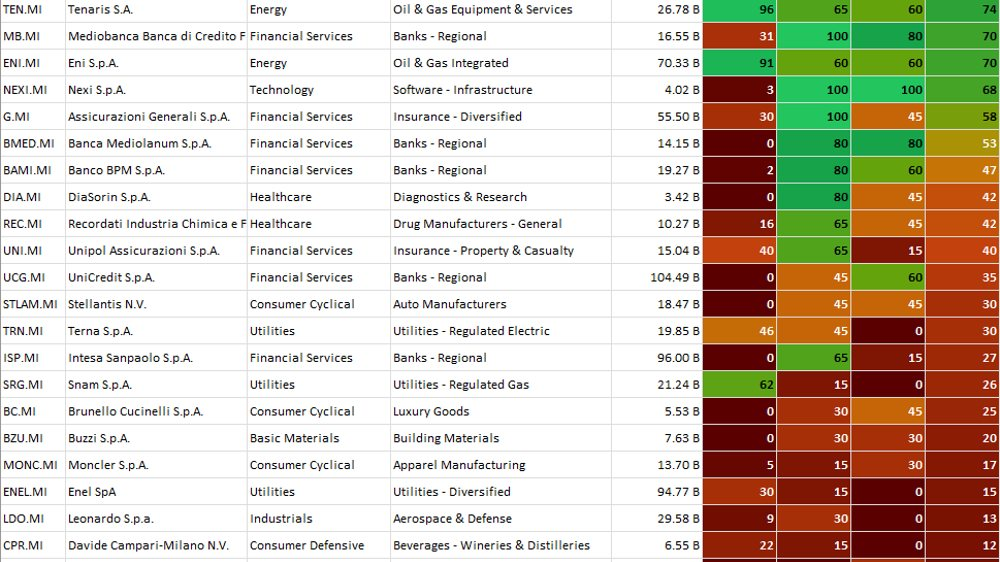
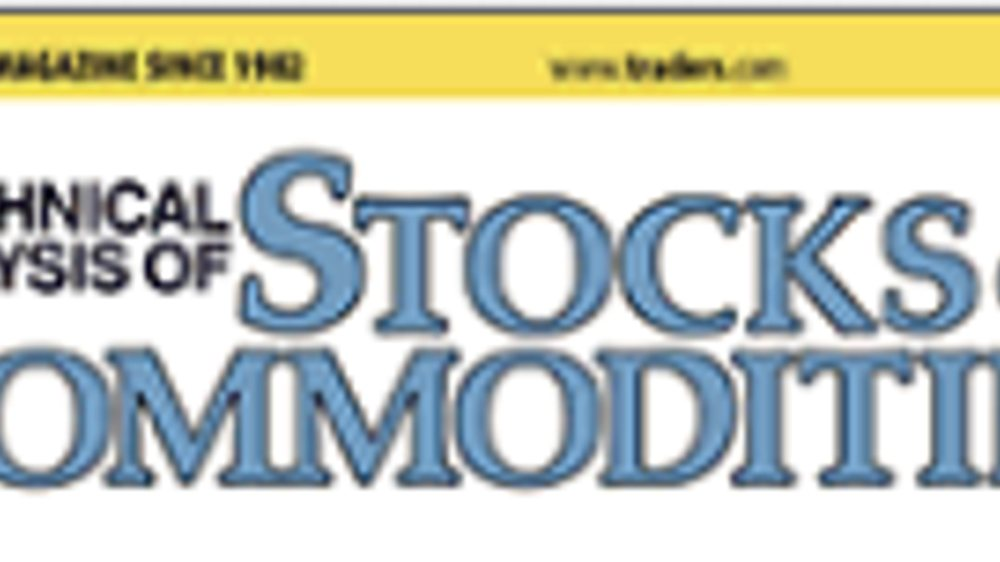
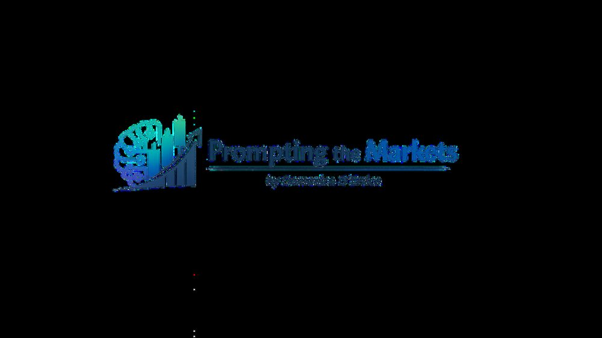
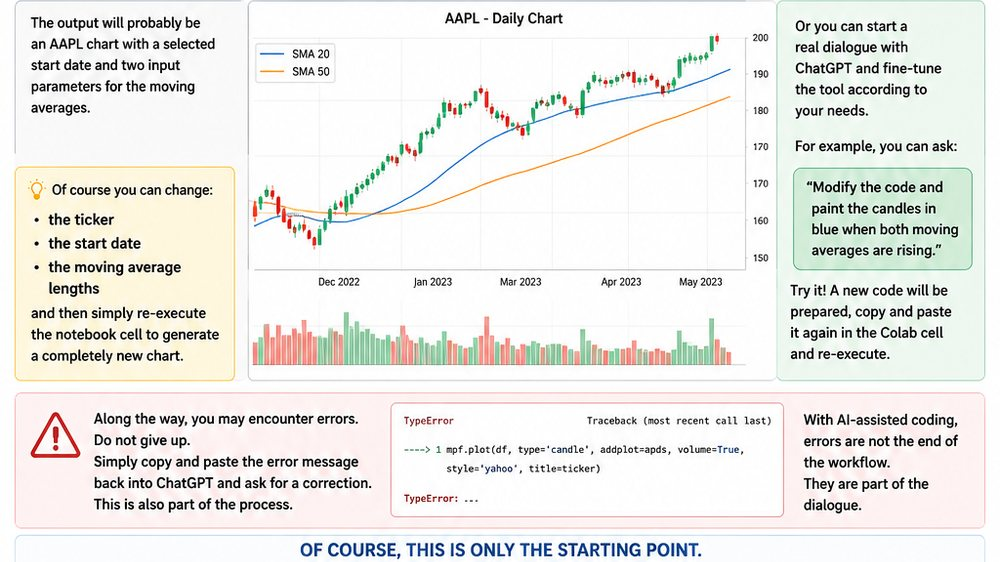

A quantitative framework designed to transform market data into actionable research, trading tools, market intelligence and educational content.
Explore the Framework
Discover real-world institutional applications across equities, futures and forex markets.
Learn to build, test and validate systematic trading tools with TradeStation EasyLanguage.
Connect classic technical trading with risk management, portfolio thinking and machine learning.
View on AmazonQuantitative research, market regime analysis, asset allocation, ETF research, options analytics, relative strength, volatility studies and AI applications.
Development of scanners, dashboards, reports and trading models using Python, Google Colab, TradeStation, EasyLanguage, TradingView and AI-assisted workflows.
Training and mentoring for traders, developers and professionals interested in systematic trading, portfolio construction, EasyLanguage and AI for trading.
Books, articles, research notes, white papers, market reports and educational content focused on algorithmic trading and quantitative market analysis, including published work in Technical Analysis of Stocks & Commodities.
A systematic view of financial markets based on market regimes, relative strength, volatility, breadth, portfolio signals and quantitative indicators.
View Latest Market ReportLike a mosaic, every market signal is only meaningful when viewed as part of the whole.
TradeStation EasyLanguage for Algorithmic Trading is the foundation of the TradingAlgo publishing library: a practical guide to systematic strategy design, EasyLanguage development, backtesting, risk management and machine-learning extensions.
View on AmazonA professional archive of published research articles covering technical indicators, volume analysis, market cycles, pair trading, AI, machine learning and portfolio management.
Ongoing market notes and research essays on TradingAlgo Mosaic, prompt trading, market regimes, technical analysis, institutional strategy design and systematic portfolio thinking.
An application of technical analysis to portfolio construction and capital allocation, shifting the focus from single-trade signals to portfolio-level regime awareness, ranking, and risk management.
A machine-learning workflow for evaluating technical indicators beyond static rules, using data-driven classification and validation to identify when an indicator adds useful market information.
An exploration of how artificial intelligence can support technical trading research, from pattern interpretation to systematic decision support and model-assisted strategy development.
A practical look at using AI in the trading-system development process, combining market hypotheses, rules, testing, and optimization into a more structured research workflow.
A portfolio strategy built around accumulation/distribution concepts, using volume-informed pressure to rank securities and guide allocation decisions across a basket of assets.
A framework for transforming multiple technical indicators into a rating model, making discretionary chart evidence easier to compare, score, and apply systematically.
An investigation of recurring market cycles and how monthly patterns can be measured, validated, and translated into timing rules for trading and research.
A study of overnight volume and its potential information value for intraday trading, focusing on how activity outside regular hours can shape next-session expectations.

A method-oriented article on identifying market swings and turning points, with emphasis on filtering price movement into cleaner structures for analysis and trading decisions.
A comparative strategy study that tests different rule-based approaches, showing how performance evaluation can clarify whether a trading idea improves on simple benchmarks.

A variation on pair trading that examines relative behavior between securities, using spread logic and market-neutral thinking to search for opportunities when directional methods are less effective.
A sector-level volume analysis framework for reading market participation, rotation, and institutional pressure across S&P 500 groups rather than focusing only on the broad index.

An introduction to volume-based analysis on SPY, connecting price levels, trading activity, and supply-demand behavior to identify areas of market interest.

A current-market reading of the Dow Jones through trend structure, technical evidence and risk context.
Read on Medium
A regional application of the Mosaic framework to the Nifty, combining trend, momentum and relative-strength evidence.
Read Article
An Italian-market study focused on trend quality, stability and relative strength within a systematic analysis process.
Read Article
A concise essay on using technical analysis as a portfolio-management discipline rather than only as a trading-signal toolkit.
Read Article
A research note on using AI prompts as part of a disciplined market-analysis workflow, while keeping validation and context central.
Read on Medium
A practical introduction to prompt-based trading research, connecting trader questions, data workflows and repeatable analysis.
Read on MediumTradingAlgo is open to partnerships with quant researchers, asset managers, hedge funds, educators, technology providers, software platforms and financial data companies.
The objective is to build practical tools, research frameworks and market intelligence solutions for systematic trading and portfolio management.
Quant developer, author and trading technology researcher. Author of TradeStation EasyLanguage for Algorithmic Trading, contributor to Stocks & Commodities magazine and member of the Gandalf Project R&D Team.